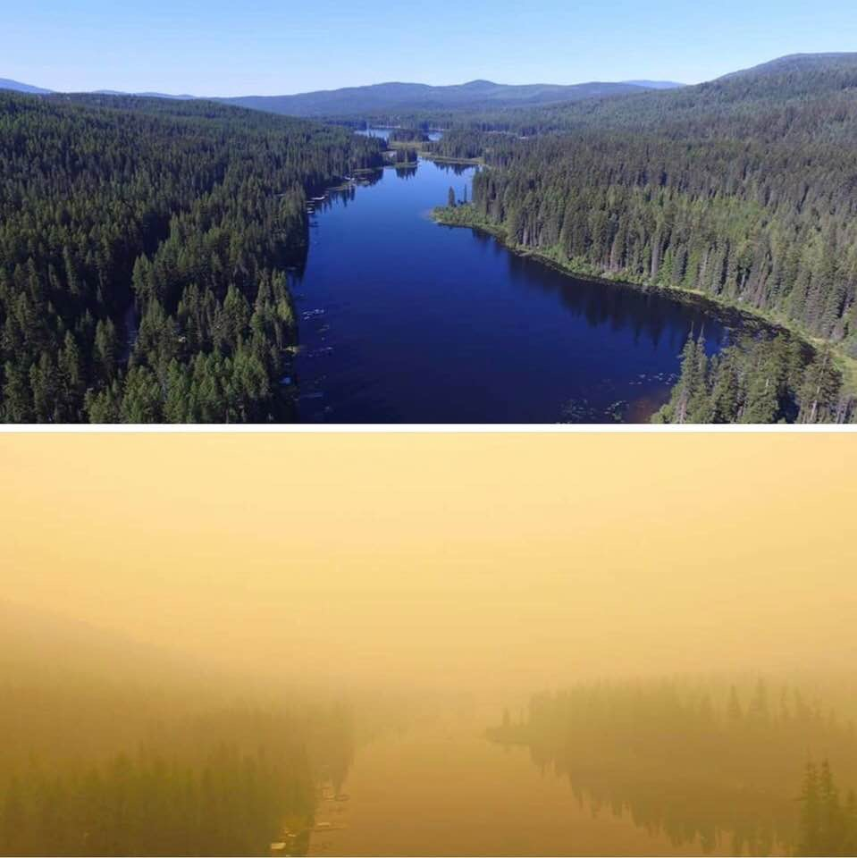

Smoke from the wildfires raging in southwestern Canada and the Northwest U.S. have brought Seattle and much of Washington State their worst PM2.5 air pollution in the past twenty years over the past few days.
At Seattle’s 4103 Beacon Hill S monitoring site, 24-hour-average fine particle pollution (PM2.5) levels hit 57.3 μg/m3 on August 14. That’s well in excess of the EPA standard of 35 μg/m3, and is the highest PM2.5 level ever measured at the site, in EPA records that extend back to 1999.
The pollution fell in the red “Unhealthy” Air Quality Index (AQI) range, which the EPA warns can cause “increased aggravation of heart or lung disease and premature mortality in persons with cardiopulmonary disease and the elderly; increased respiratory effects in general population.”
At Seattle’s Duwamish monitoring site at 4700 E Marginal Way, PM2.5 levels of 55.4 μg/m3 were measured on August 14, which ranked as the second highest PM2.5 reading of the past twenty years; a slightly higher value of 57.6 μg/m3 was measured on August 3, 2017, during another smoke episode. PM2.5 (particles that are less than 2.5 microns or 0.0001 inch in diameter)—is the most deadly form of air pollution, and causes over 80,000 premature deaths each year in the U.S.
